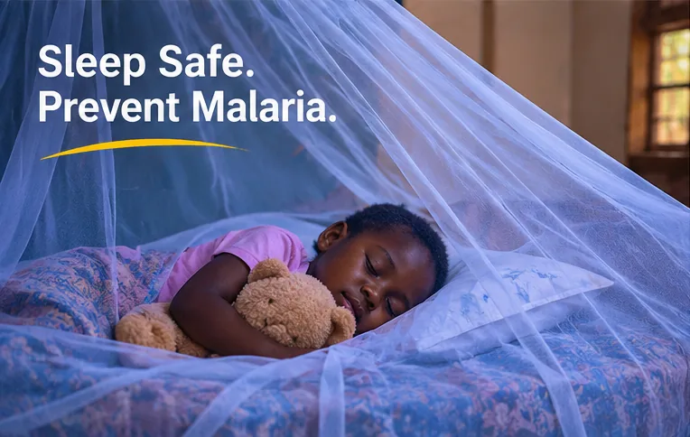

Sleep Under a Treated Net
Use an insecticide-treated mosquito net correctly and follow its care instructions.
PROTECT YOURSELF AND YOUR FAMILY
Learn how malaria spreads, recognize possible symptoms, and understand ways to reduce your risk.

Malaria is caused by Plasmodium parasites. It is usually transmitted when an infected female Anopheles mosquito bites a person.
Malaria does not normally spread through everyday contact such as touching, hugging, or sharing food.
Symptoms may begin with:
Important: These symptoms can also be caused by other illnesses. Get tested at a health facility if you suspect malaria. Severe symptoms such as confusion, seizures, or difficulty breathing require emergency medical care.
Use an insecticide-treated mosquito net correctly and follow its care instructions.
Keep your surroundings clean and remove standing water where mosquitoes may breed.
Use recommended insect repellents, protective clothing, and window screens where appropriate.
If you suspect malaria, visit a health facility for a malaria test. A healthcare professional can recommend the appropriate treatment based on the test result and your circumstances.
Do not take antimalarial medicines without appropriate medical guidance. Early diagnosis and proper treatment can prevent severe illness.